#3712 Die Wahlkämpferin
Alternativ: Our Brand Is Crisis
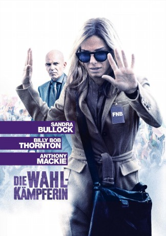 
 IMDB-Wertung: 6.1 / 10
IMDB-Wertung: 6.1 / 10  Metascore: 0
Metascore: 0 
Jane Bodine ist eine brillante, mit allen Wassern gewaschene, aber gescheiterte Strategin, die zuerst ablehnt, als man ihr das Angebot unterbreitet, die Kampagne eines bolivianischen Präsidentschaftskandidaten zu leiten. Erst als ihr bewusst wird, dass ihr einstiger Erzfeind den Wahlkampf des Widersachers koordiniert, beißt sie an. Janes Verhalten ist zunächst erratisch, die Zahlen schlecht, aber dann lässt sie sich mitreißen und kämpft sich erst zurück in den Job und dann ins Leben.
Jahr: 2015
Dauer: 107 Minuten
FSK: 12
Land: USA Studio: Warner Bros.Tonspuren: DD5.1 - ,
Untertitel: Deutsch, Englisch,
Auflösung: 1080p (1920x1080) Größe: 9236 MB
Genre: Drama, Komödie
Regisseur: David Gordon Green
Drehbuch: Rex Pickett
Soundtrack:
Darsteller:
 Sandra Bullock als Jane
Sandra Bullock als Jane Billy Bob Thornton als Pat Candy
Billy Bob Thornton als Pat Candy Anthony Mackie als Ben
Anthony Mackie als Ben Joaquim de Almeida als Castillo
Joaquim de Almeida als Castillo- 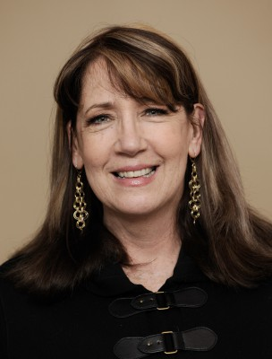 Ann Dowd als Nell
 Scoot McNairy als Buckley
Scoot McNairy als Buckley- 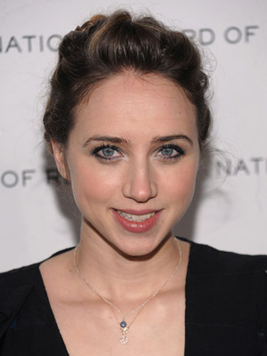 Zoe Kazan als LeBlanc
- Dominic Flores als Hugo
- Reynaldo Pacheco als Eddie
- Louis Arcella als Rivera
- 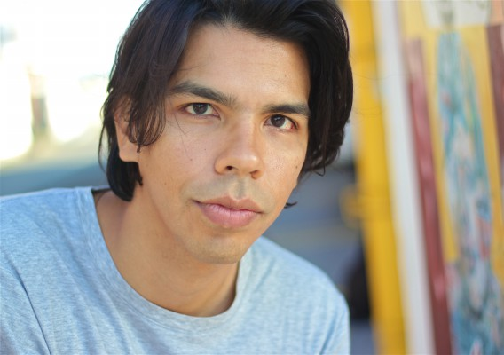 Octavio Gómez Berríos als Pepe
- Luis Chávez als Abraham
- 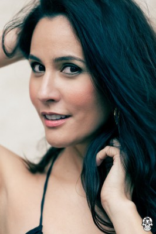 Nina Leon als Rivera Reporter
- Luis Carlos Guevara als Focus Group Moderator
- 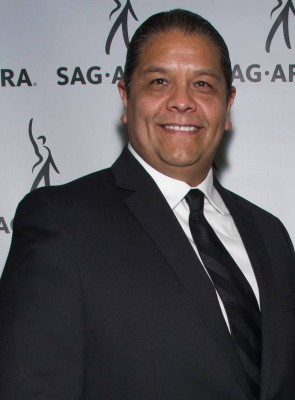 Edgar Arreola als Demostration Chant Leader
- Carmela Zumbado als Female American Reporter
- Casiano Ancalle als Campesino Leader
- Martina Griffin als Castillo Spot Mother
- Matilda Del Toro als Presidential Secretary
- Osvaldo Fernandez als Jail Policeman
- Mariana Alvarez als TV Presenter
- Nancy Castro als TV Presenter
- Dan Hewitt Owens als American IMF Man #1
- Adam Fiorentino als IMF Representative
- 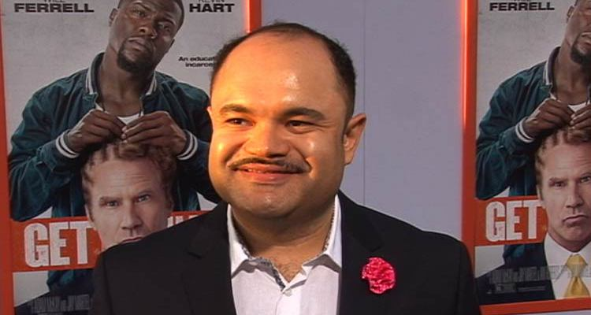 Erick Chavarria als Devil Mask Man
 Harry Van Gorkum als Interviewer, Main Title Sequence
Harry Van Gorkum als Interviewer, Main Title Sequence John L. Armijo als Castillos Security / Protester , uncredited
John L. Armijo als Castillos Security / Protester , uncredited- Bianca Bonciu als Actress , uncredited
- 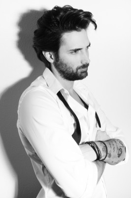 Nicolas Bosc als Protester , uncredited
- Cherif Gacis als Political Supporter / Protester , uncredited
 Gino Galento als Castillo Junior's Staff , uncredited
Gino Galento als Castillo Junior's Staff , uncredited- Rebecca Gamble als Bolivian Woman , uncredited
 Jim Gleason als US Ambassador , uncredited
Jim Gleason als US Ambassador , uncredited- Samantha Glover als Rally Girl , uncredited
- Nicole Victoria Gomez als Bolivian Protester , uncredited
- Gilbert Hiracheta als Senior Staff , uncredited
- 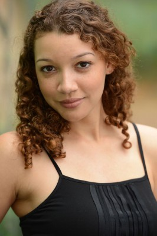 Julia Holt als Protestor , uncredited
- 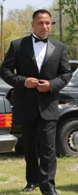 Inder Kumar als Demonstrator , uncredited
- Rhonda Laizer als Rally Fan / Still Photographer / Presidential Aide , uncredited
- Alejandro Loayza als Karl Weschta , uncredited
- Cindy Long als Bolivian Cholita , uncredited
- Jeff McNeal als AM Talk Radio Show Host , uncredited
 Sam Medina als Film Crew , uncredited
Sam Medina als Film Crew , uncredited- Gina Montana als Cholita Boliviana, Journalist , uncredited
 Thomas Rosales Jr. als Mini-vehicle driver , uncredited
Thomas Rosales Jr. als Mini-vehicle driver , uncredited- 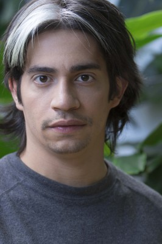 Ramiro 'Ramir' Delgado Ruiz als Bolivian Pedestrian , uncredited
- Russ Skains als Bolivian Man , uncredited
- Javier B. Suarez als Castillo's Party member , uncredited
- Danny Trevino als Bolivian Protester , uncredited
- Ronald Joe Vasquez als Security , uncredited
Datei: X:\2015(N-Z)\Wahlkämpferin, Die (2015, FSK12, 1920x1080).mkv seit 23.05.2016
Festplatte: HD 2015(A-Z)
 Es gibt insgesamt 161 Filme in der Gruppe '2015(N-Z)'
Es gibt insgesamt 161 Filme in der Gruppe '2015(N-Z)'